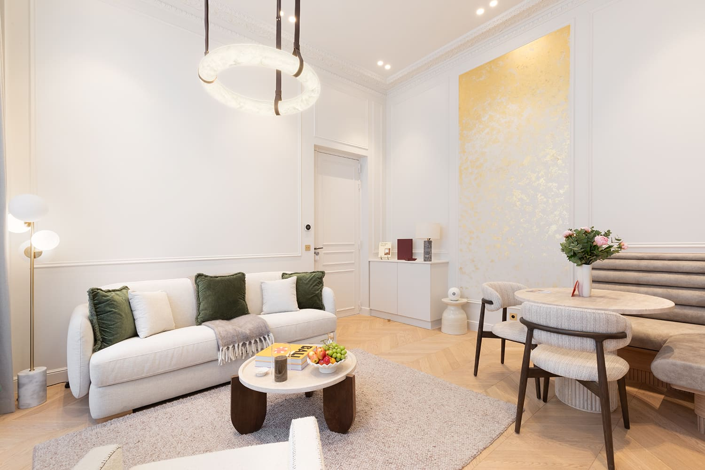
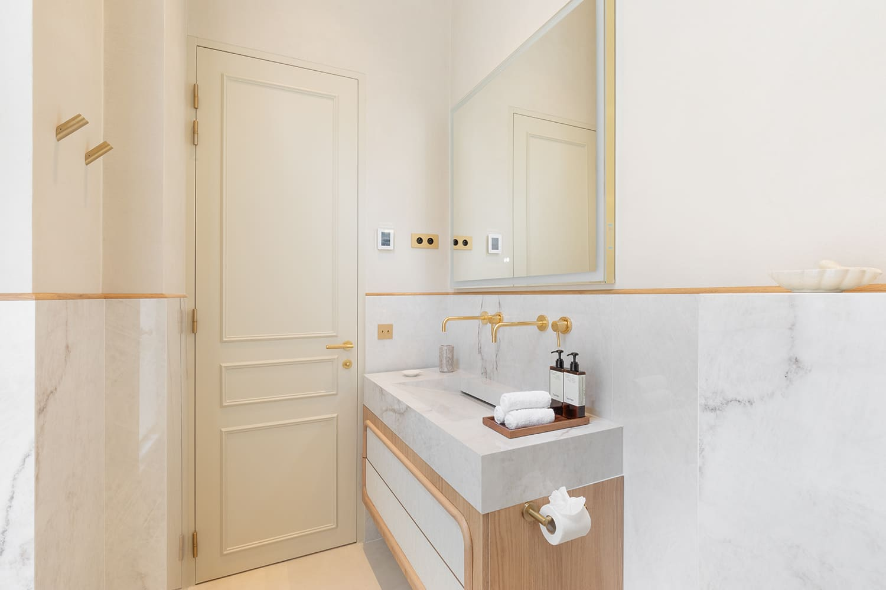
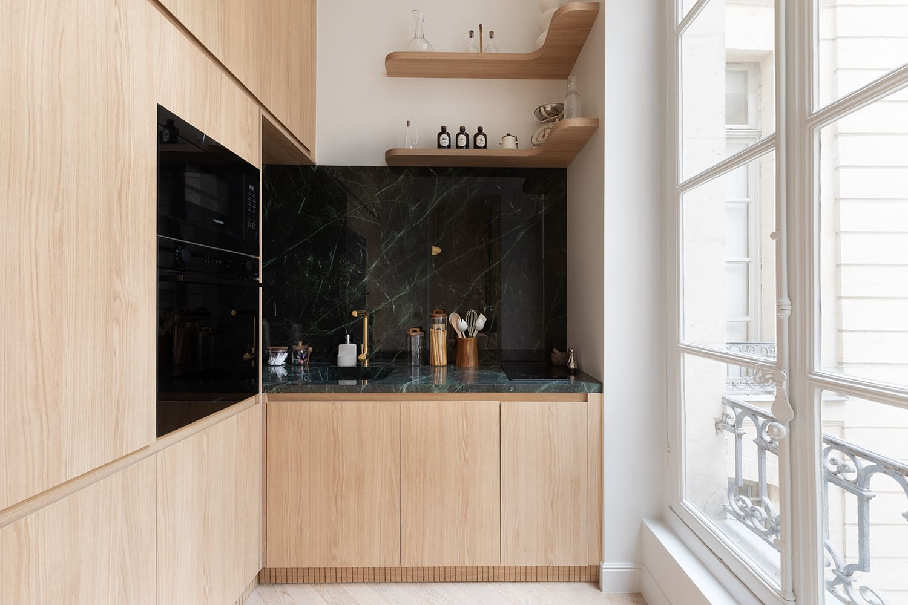
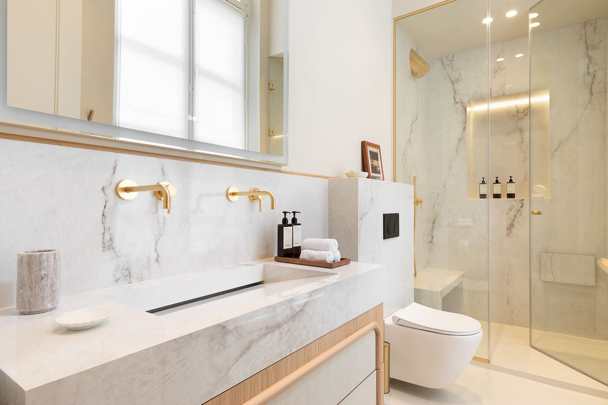
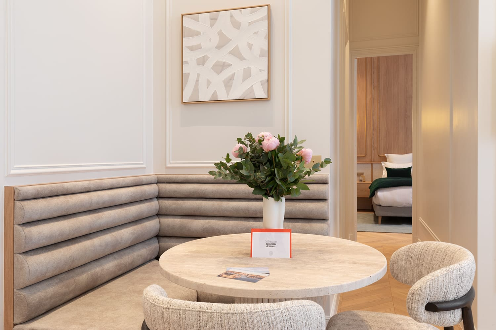
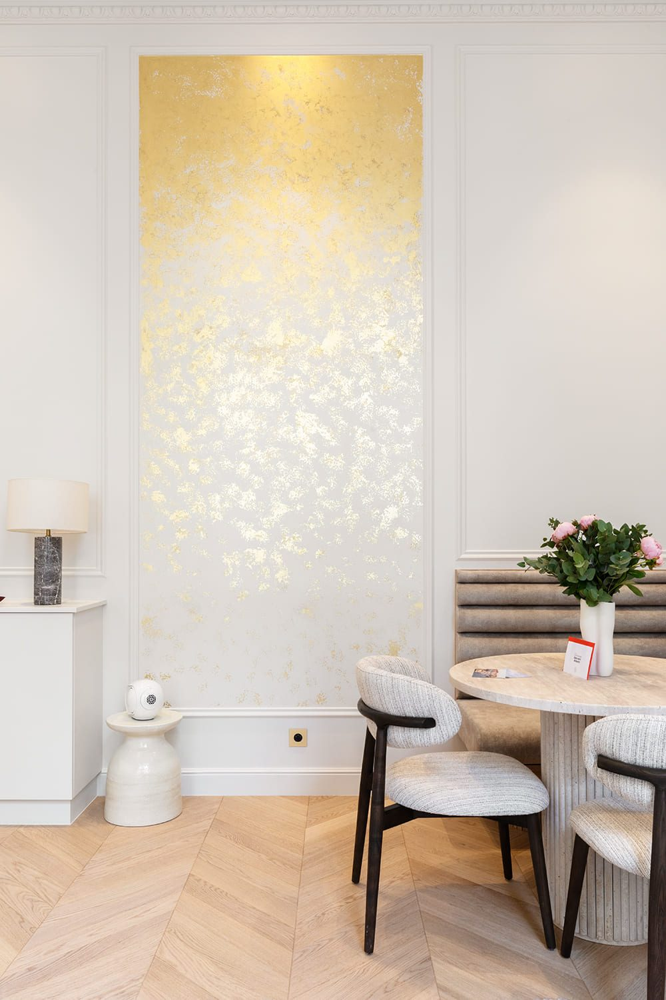

Paris 1er
Rue de Rivoli, un même immeuble, des appartements radicalement distincts. La contrainte comme source créative — chaque espace, son propre caractère.
Rue de Rivoli, au cœur du 1er arrondissement de Paris, John Rozenblum a repensé et restructuré deux appartements au sein d'un même immeuble. Le défi : donner à chaque espace une identité propre et forte, sans jamais les opposer. Une intervention de designer d'intérieur à Paris qui démontre qu'un programme contraint — ici, 70 m² — peut devenir l'occasion d'une création singulière. Aménagement optimisé, mobilier sur mesure et sélection rigoureuse des matériaux définissent un standard d'exigence rare dans cette gamme de surface.
Rue de Rivoli, dans le 1er arrondissement, deux appartements du même immeuble ont été repensés et restructurés dans le même mouvement. La tentation était de les traiter comme une paire. Le projet a fait l'inverse : donner à chacun un caractère propre, assez fort pour qu'on ne les confonde pas, sans jamais les opposer. Les contraintes communes — mêmes hauteurs, mêmes fenêtres, même orientation — deviennent alors une ressource.
Dans les deux appartements, le coin repas s'organise autour d'une banquette capitonnée sur mesure et d'une table ronde. Ce dispositif tient moins de place qu'une table entourée de chaises, adosse le repas à un mur et libère la circulation. C'est la pièce de mobilier qui décide du plan : une fois sa longueur fixée, tout le reste du séjour se déduit.
Un pan de mur du séjour est traité à la feuille d'or, encadré de moulures comme un tableau. C'est la seule licence du projet, et elle est calculée : posée sur un mur borgne, elle capte la lumière du jour et la renvoie dans une pièce qui n'en reçoit que d'un côté. Ce qui pourrait passer pour un geste décoratif est d'abord un dispositif d'éclairage.
Le premier appartement travaille le chêne clair et une crédence de marbre vert sombre ; le second, les blancs et le marbre veiné. Mais les détails sont communs : vasques monoblocs, robinetterie laiton, douches à l'italienne entièrement vitrées, portes à panneaux conservées. La différence se joue sur la matière, pas sur la méthode — c'est ce qui permet de reconnaître la même main dans deux résultats distincts.
Rivoli rejoint les rénovations conduites dans le 1er arrondissement de Paris, aux côtés de Louvres, Châtelet et Déchargeurs.
Ce projet fait partie des réalisations de design d'intérieur à Paris de John Rozenblum. Pour discuter d'un projet similaire ou d'une rénovation sur mesure, prenez contact.






Un projet ?
Chaque projet commence par une conversation. Partagez votre vision — je m'occupe du reste.
Prendre contact